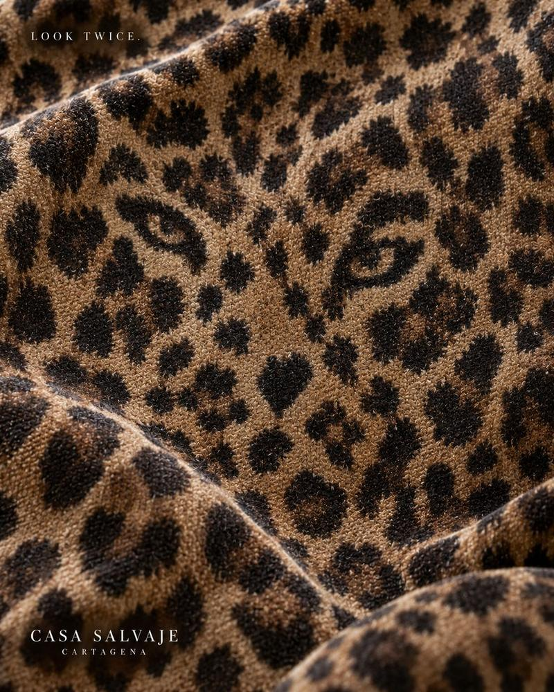
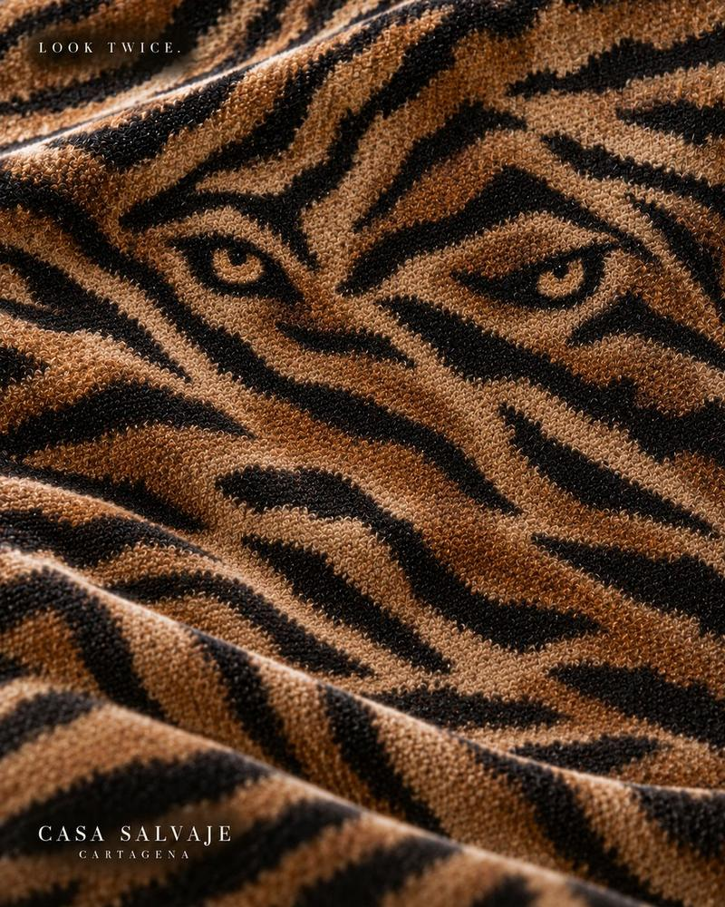
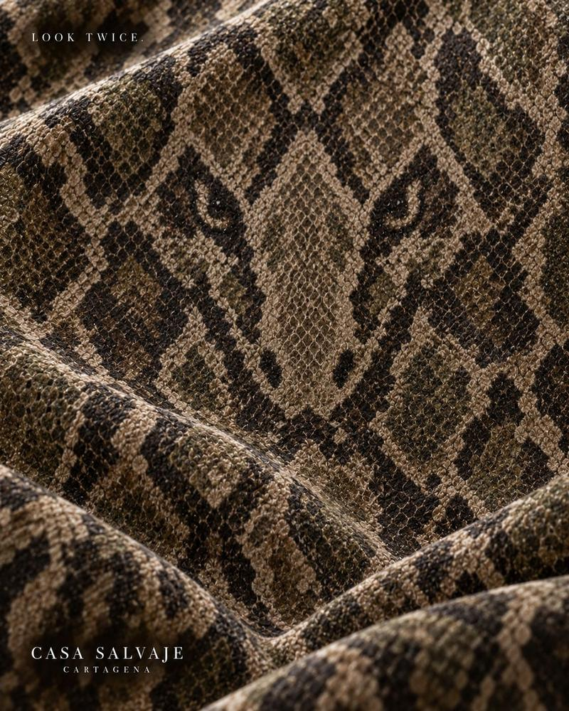

Llévate la casa.Take the house with you.
El arte de Casa Salvaje, serie por serie. Descárgalo para tu teléfono, tu computador o lo que quieras.The art of Casa Salvaje, series by series. Download it for your phone, your laptop or whatever you like.
Look Twice
Telas salvajes con unos ojos escondidos. Mira dos veces.Wild fabrics with hidden eyes. Look twice.




Ritual & Desire
El jaguar en mosaico sobre azulejo verde, con una copa.The mosaic jaguar on green tile, with a glass.

Red Letters
Tipografía roja, serpientes y un jaguar.Red type, snakes and a jaguar.


Altars
Altares de terciopelo para el banquete de SLVJ.Velvet altars for the SLVJ feast.


Endless Sunday
La Domenica: un domingo largo dentro de un toile de naranjos.La Domenica: a long Sunday inside an orange-grove toile.


Sundays, Supersized
La Domenica: limón, aceituna y tomate en tamaño gigante.La Domenica: lemon, olive and tomato, supersized.


Glyphs
Kanibal: fuego, carne y glifos rojos.Kanibal: fire, meat and red glyphs.


Beneath the Skin
ONO: pescados tatuados con olas y palmas.ONO: tattooed fish with waves and palms.


Unmask Your Oni
ONO: dos máscaras oni, roja y verde.ONO: two oni masks, red and green.